## Programmi Statistici - MEPI
## Autore: Alberto Mateo Urdiales
## Obiettivo: Analisi dei dati di un focolaio di Ebola
## Contatto: alberto.mateourdiales@iss.it
## Data ultimo aggiornamento: 21 gennaio 2025
# SESSIONE 1 --------------------------------------------------------------
## 4.2. Istallare e caricare i pacchetti necessari -------------------------
# installa (se necessario) da CRAN e carica i pacchetti da utilizzare
pacman::p_load(
rio, # importazione dati
skimr, # ottieni panoramica dei dati
janitor, # pulizia dati e tabelle
lubridate, # lavorare con le date
epikit, # per creare categorie di età
flextable, # per formattare tabelle
scales, # per mostrare percentuale nelle tabelle
gtsummary, # statistiche riassuntive, test e regressioni
tidyverse # gestione e visualizzazione dati
)
## 4.3. Leggere i dati -----------------------------------------------------
# leggere i dati di Ebola
casi_ebola_grezzo <- import("data/linelist_raw.xlsx")
# 3.1. importare le informazioni degli ospedali
osp_info <- import("data/hosp_info.RDS")
## 4.4. Esplorare il database ---------------------------------------------------
# esplorare tutto il database con skimr
skim(casi_ebola_grezzo)
# esplorare categorie di una variabile "character" o "factor"
tabyl(casi_ebola_grezzo, gender)
tabyl(casi_ebola_grezzo, hospital)
tabyl(casi_ebola_grezzo, fever)
# SESSIONE 2 --------------------------------------------------------------
## Pulizia dei dati --------------------------------------------------------
#vederei nomi delle colonne
names(casi_ebola_grezzo)
casi_ebola_pul <- casi_ebola_grezzo %>%
#rinomina automaticamente tutte le colonne
clean_names() %>%
#rinomina manualmente
rename(
#NUOVO_NOME = VECCHIO_NOME
date_hosp = hosp_date,
date_infection = infection_date
) %>%
select(-merged_header, -x28) %>% #rimuove queste colonne
#funzioni come starts_with() o everything() o contains() (non utilizzata qua)
#sono funzioni che ci rendono la vita molto più facile
select(case_id, starts_with("date"), everything()) %>%
#4.1. creazione di una colonna con un valore: Ebola
mutate(malattia = "Ebola") %>%
#4.2. modifichiamo age per convertirla in numerica
mutate(age = as.numeric(age)) %>%
#4.2. ricodificare gender
mutate(gender = recode(gender,
"m" = "maschi",
"f" = "femmine")) %>%
#4.2. ricodificare hospital
mutate(hospital = recode(hospital,
"Central Hopital" = "Central Hospital",
"Military Hopital" = "Military Hospital",
"Mitylira Hopital" = "Military Hospital",
"Mitylira Hospital" = "Military Hospital",
"Port Hopital" = "Port Hospital",
"St. Mark's Maternity Hospital (SMMH)" = "SMMH",
"St. Marks Maternity Hopital (SMMH)" = "SMMH"
)) %>%
#4.3. ricodifica logica per stato_caso
mutate(stato_caso = case_when(
ct_blood < 20 ~ "confermato",
!is.na(source) & fever == "yes" ~ "sospetto",
TRUE ~ "sotto_indagine"
)) %>%
#4.3. ricodifica logica di età
mutate(eta_anni = case_when(
age_unit == "years" ~ age,
is.na(age_unit) ~ age,
age_unit == "months" ~ age/12
)) %>%
filter(!is.na(case_id) & stato_caso == "confermato" & date_infection >= "2014-01-01")
#Verifichiamo che age è cambiata (QUESTO NON E' PARTE DEL COMANDO DI PULIZIA)
class(casi_ebola_grezzo$age)
class(casi_ebola_pul$age)
#Verifichiamo che gender e hospital sono ricodificati correttamente (QUESTO NON E' PARTE DEL COMANDO DI PULIZIA)
tabyl(casi_ebola_pul$gender)
tabyl(casi_ebola_pul$hospital)
#Verifichiamo la nuova variabile stato_caso
tabyl(casi_ebola_pul$stato_caso)
#Pulizia dati ospedali
osp_info_pul <- osp_info %>%
mutate(hosp_name = recode(hosp_name,
"St. Mark's Maternity Hospital (SMMH)" = "SMMH")) %>%
filter(!(hosp_name == "Military Hospital" & level == "Primary"))
# SESSIONE 3 --------------------------------------------------------------
# Tabelle -----------------------------------------------------------------
#Step 2 aggregare dati per ospedale
casi_ospedale <- casi_ebola_pul %>%
group_by(hospital) %>% #raggruppamento per la variabile hospital
summarise(n_casi = n(),
media_eta = round(mean(eta_anni, na.rm = TRUE), digits = 1),
ult_infez = max(date_infection, na.rm = TRUE),
n_fem = sum(gender == "femmine", na.rm = TRUE),
perc_fem = round(n_fem/n_casi*100, digits = 1),
.groups = "drop") #è buona praxis rimuovere raggruppamento alla fine
#per vedere il risultato
casi_ospedale
#3.2. pulire
inc_osp <- left_join(casi_ospedale, osp_info_pul, by = c("hospital" = "hosp_name"))
inc_osp_pul <- inc_osp %>%
filter(!is.na(catchment_pop)) %>%
mutate(inc = round(n_casi/catchment_pop*10000, digits = 1)) %>%
select(-c(level, n_fem, catchment_pop)) %>%
arrange(-inc)
flex_inc_osp <- flextable(inc_osp_pul) %>%
#Adattare la larghezza e l'altezza
autofit() %>%
#Rinominare le colonne
set_header_labels(
hospital = "Ospedale",
n_casi = "N. casi",
media_eta = "Età media dei casi",
ult_infez = "Data ultima infezione",
perc_fem = "% femmine tra i casi",
inc = "Incidenza per 10.000"
) %>%
#Allineare le celle
align(align = "center", part = "all") %>%
#Intestazione in grassetto
bold(i = 1, bold = TRUE, part = "header") %>%
#Linee verticali
vline(part = "all", j = 1:6) %>%
#Celle in rosso se inc > 40
bg(j = 6, i = ~ inc > 40, part = "body", bg = "red")
flex_inc_osp
#Esportare il database
save_as_docx(flex_inc_osp, path = "outputs/table_inc_osp.docx")
### 5. Tabella di outcome ed età per sesso -----------------------------------------
casi_ebola_pul %>%
select(outcome, age, gender) %>% #seleziona le colonne necessarie
tbl_summary(by = gender) %>% #crea la tabella per gender
add_p() #calcola test d'ipotesiMaster II livello Epidemiologia - Programmi Statistici
Sessione 4 - Grafici e analisi stratificata:
Obiettivi di questa sesione
capire la grammatica di {ggplot2},
imparare a fare grafici semplici
Preparazione
In questo esercizio continueremo a lavorare sullo script analisi_ebola.R che abbiamo sviluppato nelle ultime tre lezioni.
Prima di cominciare, assicurati di:
Avere RStudio aperto con il progetto prog_stat_mepi.
Aprire lo script analisi_ebola
Pulire l’Environment
Far correre lo script e assicurarti che tutto funzioni bene
Crea una nuova sezione nello script chiamata “Grafici”
Se pensi che il tuo script a questo punto sia incompleto o hai dubbi, puoi confrontarlo con il codice che si trova qui sotto. Il tuo script dovrebbe essere simile.
Clicca per vedere lo script
Step 1: Grafico a barre
Compito
Creare un grafico a barre impilate (stacked) con il numero di casi per genere e ospedale. Segui i passi succesivi
1.1. Comincia per “aprire il grafico”
Come abbiamo visto durante la lezione, il primo passo è aprire il grafico con la funzione ggplot(). Dentro specifica il database che vogliamo usare per creare il grafico: casi_ebola_pul. Puoi specificare il database sia attraverso l’argomento data = dentro ggplot() oppure usare l’operatore pipe %>%. Lancia il codice. Dovresti vedere un grafico “vuoto” nella scheda “Plots”.
Clicca per vedere la soluzione (provaci da solo prima!)
##Specificando il database dentro ggplot
ggplot(data = casi_ebola_pul)##usando l'operatore pipe
casi_ebola_pul %>%
ggplot()Il vantaggio di usare l’operatore pipe è che ci permetterà di modificare il database prima di fare il plot, come vedremo dopo.
1.2. Assegnare l’estetica
Il secondo passo è assegnare le estetiche, ovvero dire a R quali sono le variabili che vogliamo usare per creare il nostro grafico. In questo caso, vogliamo usare due variabili: gender e hospital. Diciamo che vogliamo hospital sull’asse orizzontale (potremmo anche metterlo sull’asse verticale senza problemi) e, dato che vogliamo un grafico “stacked”, vogliamo che il colore delle barre (il fill =) dipenda da gender.
Clicca per vedere la soluzione (provaci da solo prima!)
casi_ebola_pul %>%
ggplot(mapping = aes(
x = hospital,
fill = gender
))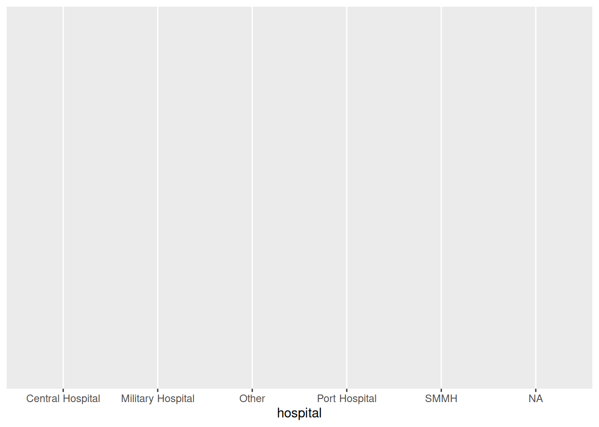
1.3. Aggiungere il geom
Il terzo passo è aggiungere il geom(). Per geom() ci riferiamo al tipo di grafico che vogliamo fare. In questo caso, dato che vogliamo un grafico a barre e stiamo usando casi individuali, dobbiamo usare geom_bar(). Puoi aggiungere questo geom al ggplot attraverso il simbolo +.
Clicca per vedere la soluzione (provaci da solo prima!)
casi_ebola_pul %>%
ggplot(mapping = aes(
x = hospital,
fill = gender
)) +
geom_bar()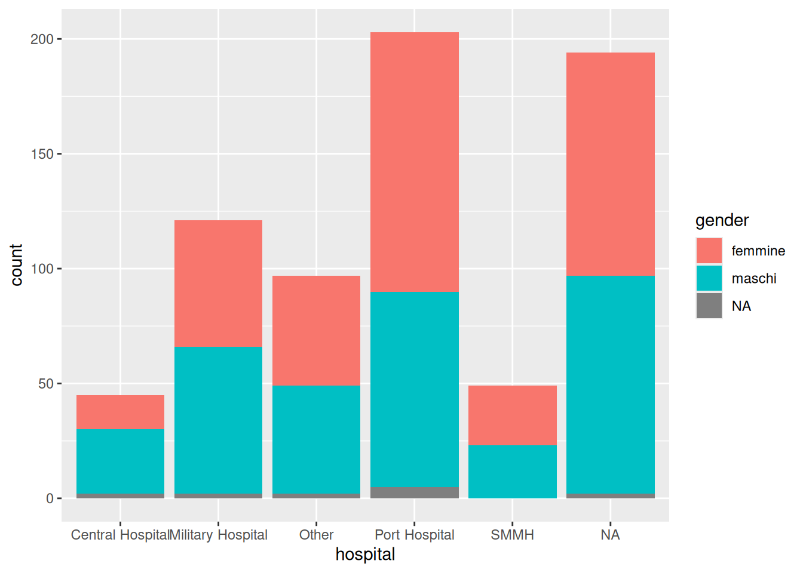
1.4. Togliere i valori mancanti
Come puoi vedere nel grafico, i valori mancanti per le variabili hospital e gender sono visualizzati. Di solito non vogliamo includere questi valori nel grafico, quindi prova a toglierli e a rifare il grafico.
Clicca per leggere un suggerimento
Ci sono diversi modi in cui possiamo togliere i valori mancanti. Il modo più efficiente in questo caso sarebbe usare la funzione drop_na(), specificando le due variabili in cui ci sono valori mancanti che vogliamo eliminare. Se usi l’operatore pipe, puoi fare entrambe le azioni (togliere i valori mancanti e fare il grafico) con un solo comando.
Clicca per vedere la soluzione (provaci da solo prima!)
casi_ebola_pul %>%
drop_na(hospital, gender) %>% #togliamo i valori mancanti
ggplot(mapping = aes(
x = hospital,
fill = gender
)) +
geom_bar()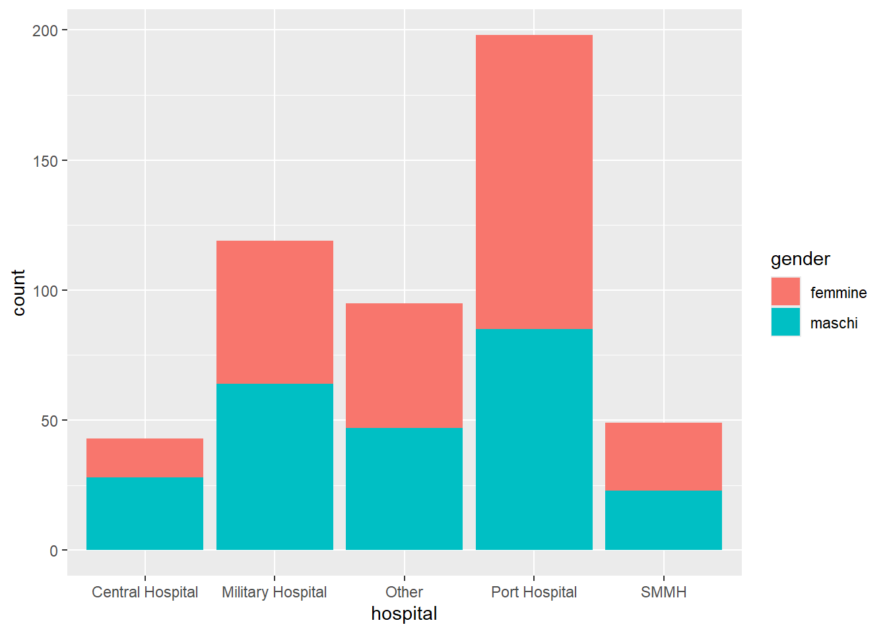
1.5. Modificare le etichette
Per ultimo, usa la funzione labs() per modificare le diverse etichette (labels) del grafico:
- Aggiungi un titolo: “Numero di casi di Ebola per ospedale e genere”
- Chiama l’asse verticale “Numero di casi”
- Chiama l’asse orizzontale “Ospedale”
- Modifica la legenda a “Genere”
Clicca per leggere un suggerimento
Dentro la funzione labs() dobbiamo specificare i diversi elementi che vogliamo modificare. Forse l’elemento meno intuitivo è quello per modificare la legenda. Nel nostro grafico, la legenda è stata creata con l’estetica fill =. Quindi, per modificare il nome, dobbiamo sempre riferirci a fill = dentro labs(). Se l’estetica fosse colour =, dovremmo riferirci a colour = anche dentro labs() per modificare il nome.
Clicca per vedere la soluzione (provaci da solo prima!)
casi_ebola_pul %>%
drop_na(hospital, gender) %>% #togliamo i valori mancanti
ggplot(mapping = aes(
x = hospital,
fill = gender
)) +
geom_bar() +
labs(
title = "Numero di casi di Ebola per ospedale e genere",
y = "Numero di casi",
x = "Ospedale",
fill = "Genere"
)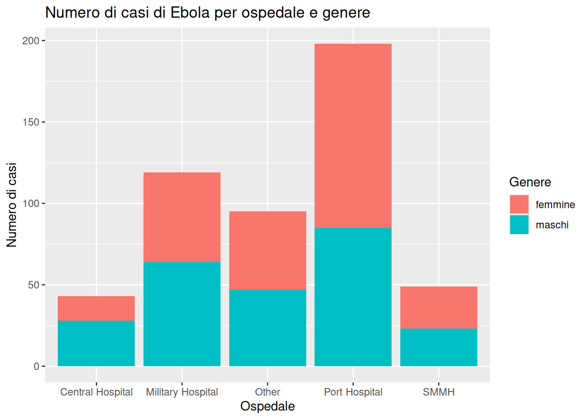
Complimenti! Hai creato un grafico in R. Se hai capito bene la sintassi di {ggplot2}, vedrai come tra poco troverai molto più facile creare visualizzazioni con questo software.
Come abbiamo detto durante la lezione, in R i grafici si possono modificare e formattare fino agli ultimi dettagli. Per esempio, puoi cambiare i colori, il testo, il background… Noi non abbiamo tempo durante il corso di imparare questi aspetti, ma vi consiglio di leggere i capitoli dell’EpiRhandbook su ggplot basics e ggplot tips. In particolare, è molto utile imparare come modificare le Scales e i Themes.
Qua sotto potete trovare un esempio di codice su come modificare il grafico che abbiamo appena fatto.
Clicca per vedere lo script
casi_ebola_pul %>%
drop_na(hospital, gender) %>% #togliamo i valori mancanti
ggplot(mapping = aes(
x = hospital,
fill = gender
)) +
geom_bar() +
labs(
title = "Numero di casi di Ebola per ospedale e genere",
y = "Numero di casi",
x = "Ospedale",
fill = "Genere"
) +
#in this scale we change the colours and the text inside the "fill"
scale_fill_manual(values = c(
"femmine" = "darkgreen",
"maschi" = "darkorange"
),
labels = c(
"femmine" = "Femmine",
"maschi" = "Maschi"
)) +
#aumentiamo il numero di intervalli nell'asse verticale
scale_y_continuous(n.breaks = 10) +
#aggiungiamo un theme pre-fabbricato
theme_bw() +
#mettiamo in grasseto il nome degli ospedali
theme(
axis.text.x = element_text(face = "bold")
)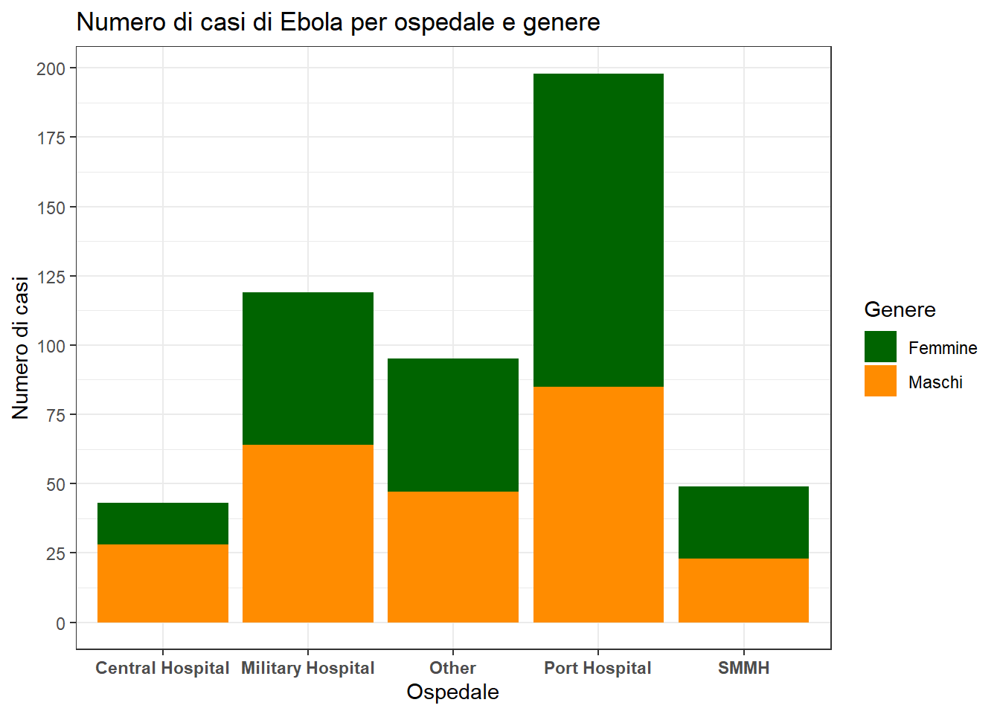
1.5. Stesso grafico con dati aggregati
Alcuni grafici in R si possono fare sia con dati individuali che con dati aggregati. Fino ad ora, abbiamo creato un grafico a barre con dati individuali. Siamo stati in grado di farlo perché il geom() che abbiamo usato, geom_bar(), utilizza dati individuali. Ma, se i dati che abbiamo fossero aggregati, potremmo fare lo stesso grafico usando un geom() diverso.
Per esempio, immagina di aggregare i dati su ospedali e gender in questo modo:
casi_ebola_pul %>%
drop_na(hospital, gender) %>% #togliamo i valori mancanti
group_by(hospital, gender) %>% #raggruppiamo
summarise(n_casi = n(), .groups = "drop") | hospital | gender | n_casi |
|---|---|---|
| Central Hospital | femmine | 15 |
| Central Hospital | maschi | 28 |
| Military Hospital | femmine | 55 |
| Military Hospital | maschi | 64 |
| Other | femmine | 48 |
| Other | maschi | 47 |
| Port Hospital | femmine | 113 |
| Port Hospital | maschi | 85 |
| SMMH | femmine | 26 |
| SMMH | maschi | 23 |
In questo caso, geom_bar() non funzionerebbe più perché è progettato per utilizzare casi individuali.
casi_ebola_pul %>%
drop_na(hospital, gender) %>% #togliamo i valori mancanti
group_by(hospital, gender) %>% #raggruppiamo
summarise(n_casi = n(), .groups = "drop") %>%
ggplot(mapping = aes(
x = hospital,
fill = gender
)) +
geom_bar() 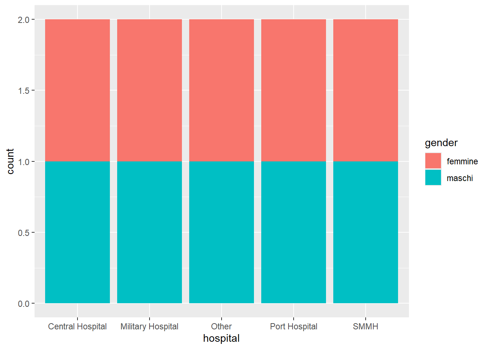
Invece di geom_bar(), possiamo usare geom_col(), che è progettato per utilizzare casi aggregati. L’unica differenza è che qui dobbiamo specificare l’asse verticale.
casi_ebola_pul %>%
drop_na(hospital, gender) %>% #togliamo i valori mancanti
group_by(hospital, gender) %>% #raggruppiamo
summarise(n_casi = n(), .groups = "drop") %>%
ggplot(mapping = aes(
x = hospital, #dobbiamo aggiungere l'asse verticale
y = n_casi,
fill = gender
)) +
geom_col() 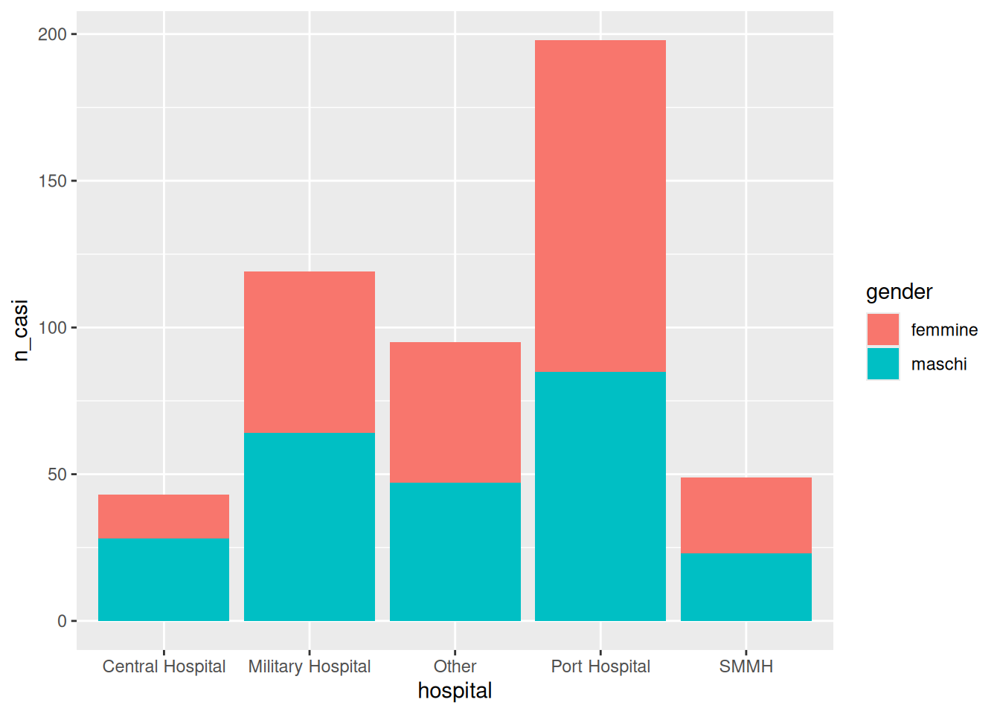
Step 2: Diagramma di dispersione (scatterplot)
Il diagramma di dispersione (o scatterplot) è un altro dei grafici più utilizzati. Dovresti aver acquisito fiducia a questo punto su come fare un grafico con {ggplot2}, quindi lo faremo in soli due passaggi.
2.1 Creare il diagramma di dispersione
Compito
Crea un scatterplot con l’eta in anni (eta_anni) e la temperatura (temp)
Modifica il colore dei punti a “darkgreen”
Clicca per leggere un suggerimento
Il geom() che dobbiamo usare per creare un scatterplot è geom_point(). Dentro geom_point() possiamo modificare il colore dei punti utilizzando l’argomento colour =.
Clicca per vedere la soluzione (provaci da solo prima!)
casi_ebola_pul %>%
drop_na(eta_anni, temp) %>%
ggplot(
mapping = aes(
x = eta_anni,
y = temp
)
) +
geom_point(colour = "darkgreen")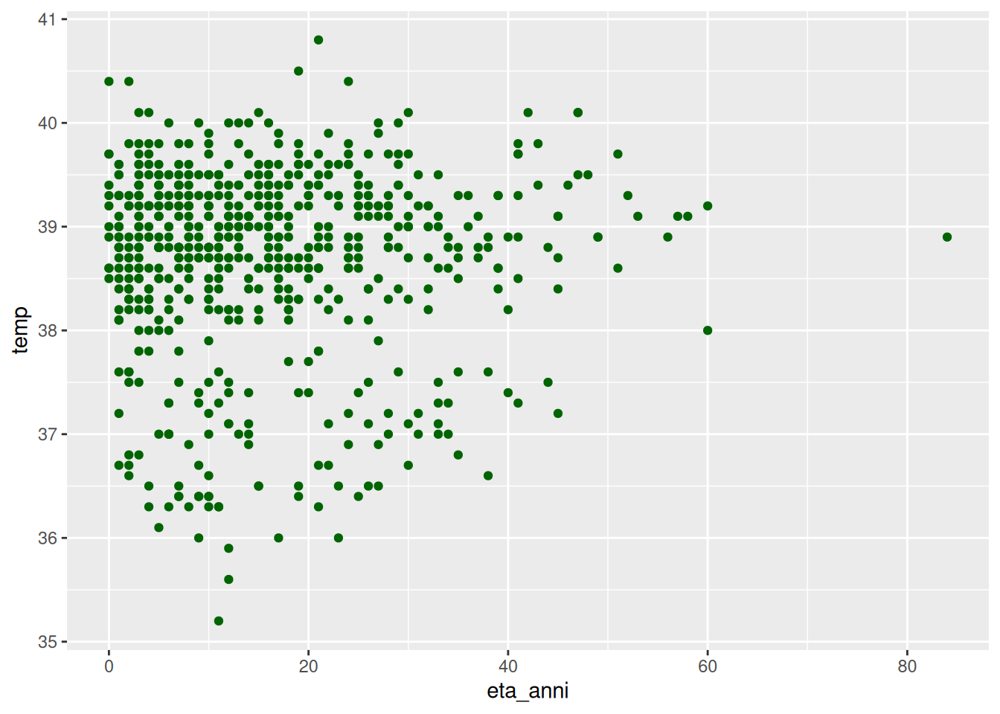
2.2 Aggiungi al grafico la linea di tendenza
Si possono aggiungere altri elementi ai grafici, addirittura si possono includere più di un geom(). Per esempio, forse vogliamo aggiungere una linea che mostri la relazione tra le due variabili (età e temperatura). In questo caso, potremmo utilizzare il geom_smooth(). Questa funzione usa diversi metodi per “fittare” una linea nei dati. Se vogliamo includere, per esempio, la linea dei minimi quadrati che rappresenta la funzione di regressione lineare, possiamo assegnare, dentro geom_smooth(), l’argomento method = a “lm” (linear model).
Clicca per vedere la soluzione (provaci da solo prima!)
casi_ebola_pul %>%
drop_na(eta_anni, temp) %>%
ggplot(
mapping = aes(
x = eta_anni,
y = temp
)
) +
geom_point(colour = "darkgreen") +
geom_smooth(method = "lm") # aggiungi la linea dei minimi quadrati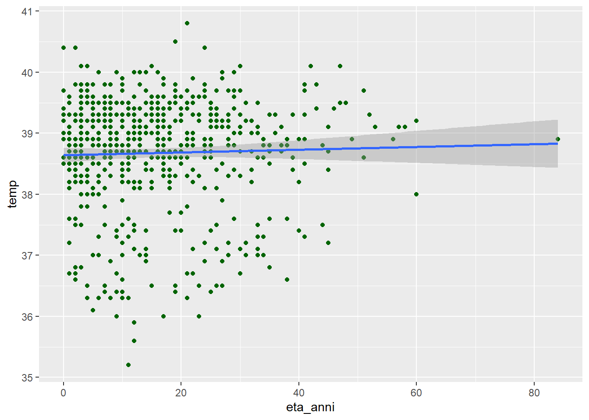
Step 3: Curva epidemica per data insorgenza sintomi e ospedale
L’ultimo grafico che faremo oggi è una curva epidemica per data di insorgenza dei sintomi e ospedale. Ma, prima, dobbiamo verificare che le variabili che dobbiamo usare abbiano il formato giusto.
3.1. Preparare i dati
Verifica che la data di insorgenza dei sintomi (variabile date_onset) sia di classe “Date”. Se non fosse di classe “Date”, trasformala in questa classe usando
mutate(). Questa modifica va fatta nel comando di pulizia che abbiamo creato nella sessione 2.Elimina le righe in cui l’ospedale è un valore mancante.
Clicca per vedere la soluzione (provaci da solo prima!)
##verificare la classe di date_onset
class(casi_ebola_pul$date_onset)[1] "character"##QUESTA RIGA DI CODICE VA AGGIUNTA AL COMMANDO DI PULIZIA ATTRAVERSO L'OPERATORE PIPE
mutate(date_onset = as.Date(date_onset))##verificare di nuovo la classe di date_onset
class(casi_ebola_pul$date_onset)[1] "Date"3.2. Curva epidemica generale
Compito
Usa geom_hisogram() per creare una curva epidemica per data di insorgenza dei sintomi in cui il colore dei quadrati dipenda dal ospedale. Ricordati di prima togliere i casi con dati mancanti su ospedale.
Clicca per leggere un suggerimento
Come nel caso di geom_bar() nei grafici a barre, geom_histogram() è progettato per utilizzare dati individuali, quindi non è necessario aggregare i dati né assegnare l’estetica dell’asse verticale a ggplot(). geom_histogram() considererà ogni riga come un caso. Basta assegnare l’estetica dell’asse orizzontale (in questo caso date_onset). Il problema è che per fare la curva epidemica date_onset deve essere una variabile di classe “Date” mentre nel nostro dataframe è di classe “character”. Cioè, testo. Dobbiamo allora trasformare questa colonna in classe “Date”.
Clicca per vedere la soluzione (provaci da solo prima!)
casi_ebola_pul %>%
drop_na(hospital) %>%
ggplot(
mapping = aes(
x = date_onset,
fill = hospital)
) +
geom_histogram() 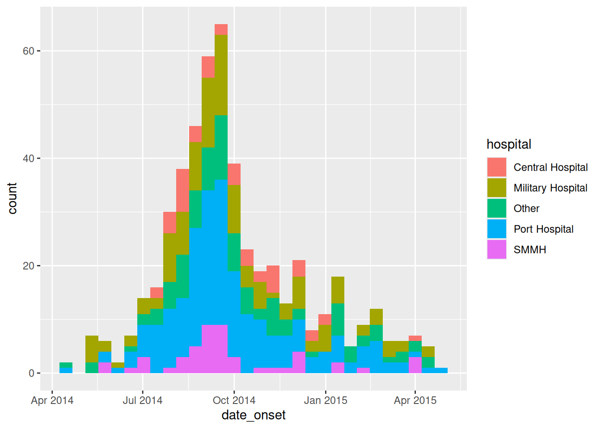
3.3. Una curva epidemica per ogni ospedale
Usa la funzione facet_wrap() per creare una curva epidemica per ogni ospedale nel database.
Clicca per leggere un suggerimento
Puoi aggiungere la funzione facet_wrap() al grafico attraverso il simbolo +. Dentro di questa funzione devi usare la tilde ~ e poi indicare la variabile che vuoi usare per creare i diversi grafici, in questo caso hospital. Puoi anche usare gli argomenti scales = per segnalare se vuoi che gli assi si addattino a ogni grafico, o nrow = e ncol = per cambiare la disposizione dei grafici.
Clicca per vedere la soluzione (provaci da solo prima!)
casi_ebola_pul %>%
drop_na(hospital) %>%
ggplot(
mapping = aes(
x = date_onset,
fill = hospital)
) +
geom_histogram() +
facet_wrap(~hospital)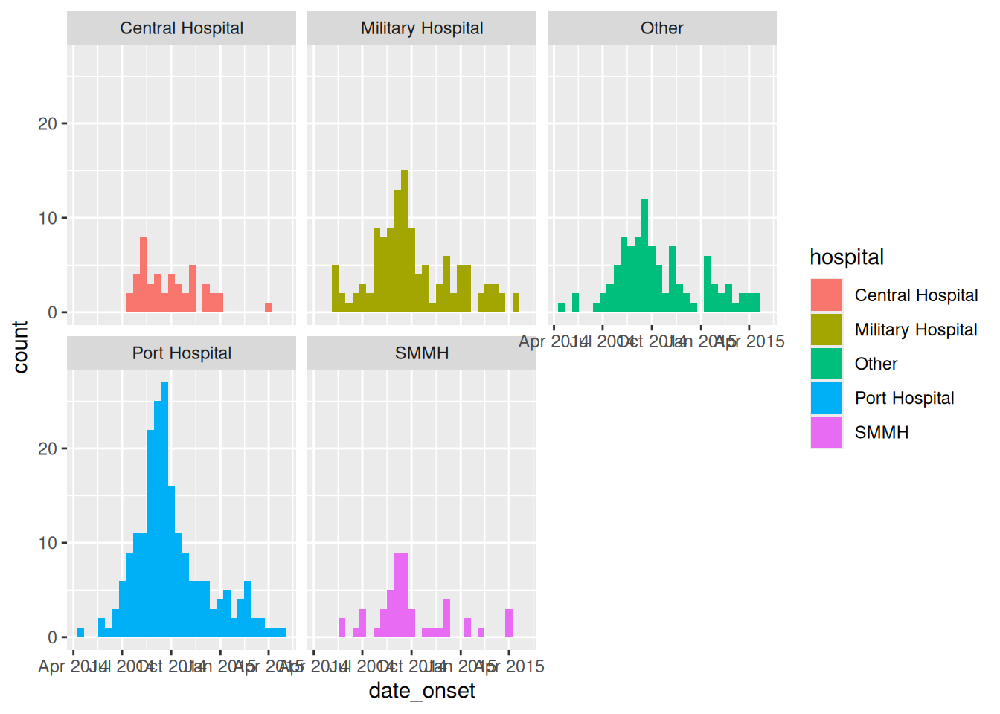
Considerazioni finali
Anche in questo caso, potresti pensare che il grafico che abbiamo appena fatto abbia bisogno di ulteriore formattazione prima di essere pronto per la pubblicazione. Hai ragione, sotto ti lasciamo un codice che rende più bello il grafico che abbiamo fatto. L’obiettivo di oggi era quello di stabilire le basi su come fare grafici con {ggplot2} con i primi tre passi della sequenza:
- Aprire il grafico con la funzione
ggplot()specificando il database - Assegnare le variabili che vogliamo graficare dentro
aes() - Scegliere il tipo di grafico che vogliamo con i diversi
geom() - Modificare gli assi con
scale_() - Formattare il grafico
C’è tantissimo da imparare. Ma adesso, con la pratica, ti sentirai sempre più fiducioso. Ricorda che puoi sempre fare riferimento ai capitoli 30-39 dell’EpiRhandbook che descrivono in dettaglio come preparare grafici in R con la stessa sintassi che abbiamo visto oggi.
Clicca per vedere lo script
casi_ebola_pul %>%
drop_na(hospital) %>%
ggplot(
mapping = aes(
x = date_onset,
fill = hospital)
) +
geom_histogram() +
facet_wrap(~hospital) + #fa un grafico per ogni ospedale
scale_x_date(
expand = c(0,0), #rimuovi lo spazio tra la linea orizzontale e il grafico
date_breaks = "4 weeks") + #vogliamo che mostri le date ogni 4 settimane
scale_y_continuous(
expand = c(0,0), #rimuovi lo spazio tra la linea verticale e il grafico
breaks = c(0, 10, 20, 30, 40, 50, 60)) + #manualmente decidiamo i breaks
#qua scegliamo i colori con una palette da questo sito: https://colorbrewer2.org/#type=diverging&scheme=RdYlGn&n=5
scale_fill_brewer(type = "div", palette = "RdYlGn") +
labs(
title = "Numero di casi di Ebola per ospedale",
y = "Numero di casi",
x = "Settimana di notifica",
fill = "Ospedale"
) +
theme_bw() +
theme(
axis.text.x = element_text(angle = 90) #mettiamo le date verticalmente
) +
#questa funzione (dallo stesso pachetto) mette nel background la curva epidemica generale
gghighlight::gghighlight() 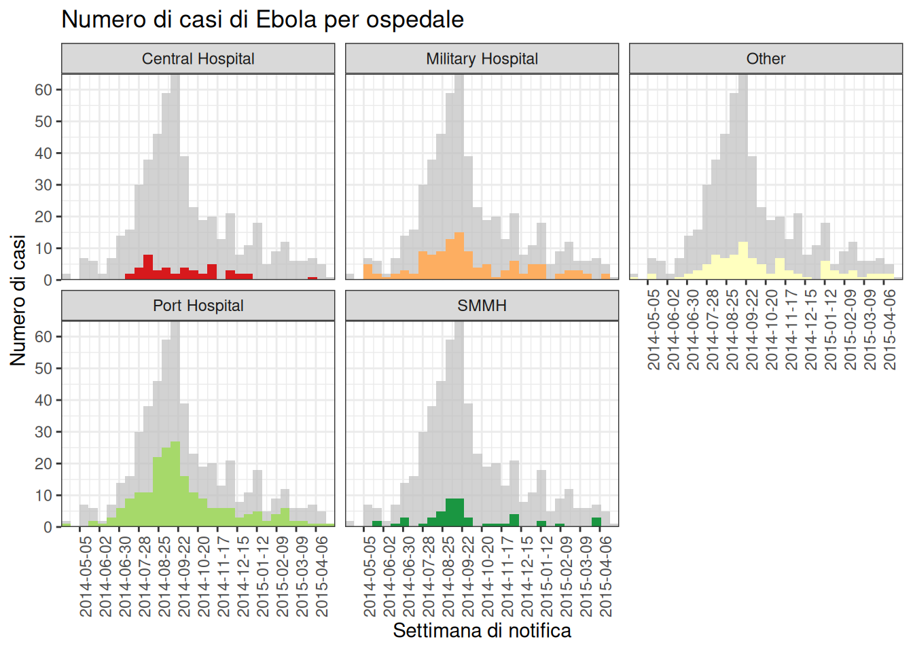
Informazioni sull’esercizio
Autore
Autore originale: Alberto Mateo Urdiales (Dipartimento Malattie Infettive, Istituto Superiore di Sanità
Fonte dati: I dati sul focolaio di Ebola provengono da AppliedEpi e si possono scaricare nel sito EpiRhandbook; i dati sul focolaio gastrointestinale fa parte dal pacchetto {EpiStats}; quello sul peso alla nascita dal pacchetto {MASS}
| Date | Changes made | Version | Author |
|---|---|---|---|
| Gennaio 2025 | First draft | 1 | Alberto Mateo Urdiales |